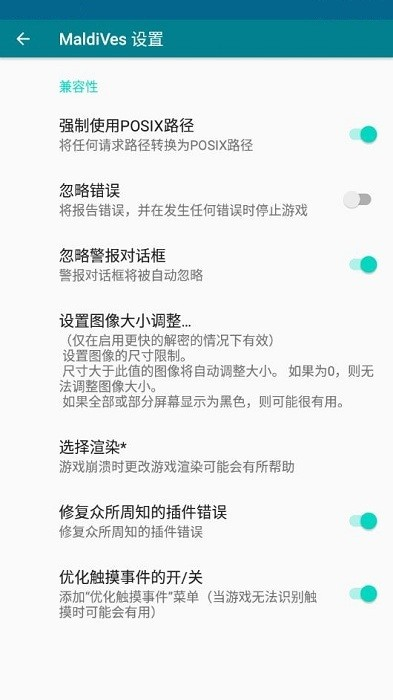

Maldives 深度盘点：一款 MV/MZ 游戏播放器到底能解决哪些痛点
从渲染、插件兼容、触控操作到设备适配，把 Maldives 这款老牌 RPG Maker 播放器的能力面完整铺开——哪里比 JoiPlay 强，哪里又还有短板，一篇说透。
手机上玩 RPG Maker 游戏，播放器是绕不开的那层兼容壳。MV/MZ 引擎本身跑在网页技术栈上，但手机浏览器的 WebGL 支持、触摸事件模型、甚至硬件驱动，每一层都可能让游戏出问题：黑图、点不动门、玩到一半黑屏只剩声音……Maldives 就是针对 MV/MZ 这一类引擎做的专用播放器——它的官网可以在 qhah.skin 域名下找到，社区里流传的"换播放器就好了"说的多半就是它。这篇盘点把它的能力域完整铺开，帮你判断什么时候该用它、什么时候还得留着 JoiPlay 做交叉验证。
渲染层：NPOT 补丁和 WebGL 2 是核心护城河
RPG Maker MV 有个移动 GPU 上的经典坑——非 2 次幂（NPOT）纹理。桌面浏览器对纹理尺寸要求宽松，但移动 GPU 的硬件限制只接受 2 的幂次方尺寸。一旦游戏里某张地图瓦片或角色立绘超出这个尺寸，在某些播放器上就直接显示空白——玩家看到的就是地图没了、角色只剩个轮廓甚至连轮廓都没有。
Maldives 的解法是在渲染层自动做 NPOT 补丁，把超大纹理实时缩放后再喂给 WebGL。社区早期的对照测试里，《Sonia and the Hypnotic City》《Twin Stars Nightmare》这两款公认有 NPOT 问题的游戏，在同类播放器上要么黑图要么关 WebGL 后卡到不能玩，换 Maldives 直接满 60 帧跑起来——而且不需要玩家改游戏包里的任何文件。
WebGL 2 是另一个维度。Maldives 用 WebGL 2 渲染管线，比早期 MV 播放器普遍用的 WebGL 1 能处理更复杂的 shader 和后处理效果，同一批游戏在 Maldives 上的帧率普遍更高、帧时间更稳，尤其是带天气特效、光照渲染的作品。安装包从官方下载直接拿就能用，不需要额外配置。

插件兼容：自动修复开关覆盖社区最常见的坑
MV/MZ 游戏生态几乎完全建立在社区插件之上。从存档增强、战斗系统扩展到 UI 美化，一款热门 MV 游戏里装十几二十个插件是常态。问题是这些插件写的时候没考虑手机浏览器环境——有的假定桌面浏览器的 DOM 结构，有的硬编码了触摸事件的处理方式，直接搬到移动端就报错。
Maldives 在兼容性设置里有一个默认开启的开关叫「修复众所周知的插件错误」。这个开关不是万能的代码沙箱，而是一个已知问题修补清单——官方持续跟踪社区反馈的高频插件兼容问题，每个版本更新都往里加新的修补项。4.22 版本修过 pixi-spine 动画插件的问题和视频组件的播放异常，4.25 版本又处理了一批 MZ 渲染器相关的边界 case。
这个开关的边界也很明确：它只修已知的、被足够多玩家验证过的问题，冷门插件的新坑不保证覆盖；它修不了游戏本身的逻辑错误——那种属于游戏开发者的 bug，任何播放器都帮不上忙。如果遇到"修复开着反而异常"的奇葩情况，可以用每游戏配置档单独给某款游戏关掉这个开关，不影响其他游戏正常运行。
触控与操作：默认够用，精细场景有专门修补
MV/MZ 游戏的默认交互模型是桌面鼠标点击。Maldives 把触摸事件转成鼠标点击后，绝大多数游戏就能直接玩：点屏幕上的格子移动角色、点对话框推进剧情、点门和 NPC 交互、点屏幕边缘呼出菜单——这些在默认设置下都能正常工作。
但有那么一类游戏，在某些播放器上会出现"触摸不响应"——典型例子是社区实测里提到的《Summer Memories》：在 JoiPlay 上有一处特定的门怎么点都没反应，玩家只能去下别人改过的游戏版本绕过去；在 Maldives 上原版直接能点。差异来自触摸事件的处理精度——Maldives 有一个「优化触摸事件」开关，打开后会在游戏里加一层触摸识别的修补，对某些把触摸事件绑定在非标准 DOM 元素上的插件特别有效。
除了默认触控，Maldives 还提供两套输入方案按需叠加：虚拟手柄（最多六个按键，适合把 MV 游戏当传统 JRPG 玩的人）和虚拟键盘（需要输入文字或按数字键呼出作弊菜单时才用）。三套输入可以共存混搭，不会互相干扰——每个开关的详细参数和进阶玩法在maldives文档里都能查到。
设备适配：中低端机上的优势更明显
播放器的渲染差异在旗舰机上往往被硬件性能掩盖——骁龙 8 Gen 系列的 GPU 足够暴力，很多兼容层的问题直接"跑过去"了。但中低端机型不一样，Redmi Note 9、Realme 3 这类千元机反而更容易把播放器的兼容层问题暴露出来。
社区里有玩家记录过自己的真实遭遇：同一款 MV 游戏，在某播放器上玩到一半画面开始闪烁，接着彻底黑屏只剩声音；换到 Maldives 从头到尾没出过问题。官方给的结论也直截了当——"这不是设备的错"，问题出在播放器的兼容层对特定设备驱动的适配。Maldives 在这一层做的测试和修补，在中低端设备上比在旗舰机上更能体现出差距。
短板也要说：引擎覆盖单一 + 老版 MV 的历史包袱
盘点不能只说优点。Maldives 的最大短板是只支持 MV 和 MZ 两个引擎。如果你的收藏夹里还有 VX、VX Ace、XP 这些老引擎的游戏，Maldives 直接打不开——这些引擎需要 Ruby 运行时，JoiPlay 靠内置 Ruby 虚拟机解决了这个问题，Maldives 从一开始就没做这条线。
另一个需要注意的点是老版 MV（2015 年前后发布）的存档崩溃问题。社区对比表里明确提到，少数非常早期的 MV 游戏在 Maldives 上存在存档损坏的报告，而 JoiPlay 在这些老游戏上反而更稳。如果你手里恰好有这种年份的老收藏，跑之前最好先手动备份存档。
什么样的人该用它
第一类人是主力玩 MV/MZ 新游戏的玩家。不管是在独立游戏商店买的还是从社区下的，只要引擎是 MV 或 MZ，Maldives 应该是你的首选播放器——渲染和插件兼容的优势是实打实能感知到的，尤其是遇到黑图或点不动的情况，换过来试原版是最省时间的排查顺序。
第二类人是手里有中低端安卓机的用户。千元机的 GPU 和驱动更容易踩兼容层的坑，Maldives 在这一层做的修补覆盖更广，闪烁、黑屏、触摸失灵这类问题撞上的概率更低。旗舰机用户也能用，但感知差异没那么强烈。
第三类人是对原版有执念的玩家。社区里流传着"某门点不动，去下改包版"这种解法——改包意味着游戏的完整性可能被破坏，后续更新也没法自动同步。Maldives 的触摸事件修补和 NPOT 补丁让更多游戏能直接跑原版，不用动游戏文件本身，对收藏党来说这点很重要。
综合来看，Maldives 不是 MV/MZ 游戏播放器的终点，但它是目前社区口碑里渲染和兼容修补做得最扎实的一款。引擎覆盖窄是它绕不开的局限，但如果你只玩 MV/MZ，它大概率是你应该先试的那一个。这份盘点引用的配置清单和安装说明，我同时同步到了三个代码仓库——常用的 GitHub、国内访问更稳的 Gitee，以及刚启用的 GitCode，搜索 "正版/maldives" 目录就能找到全部资料。